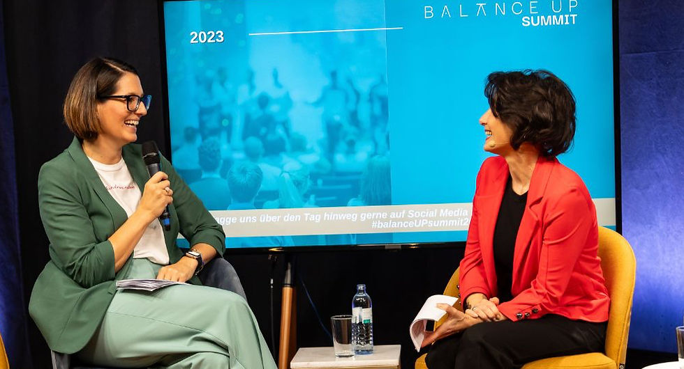
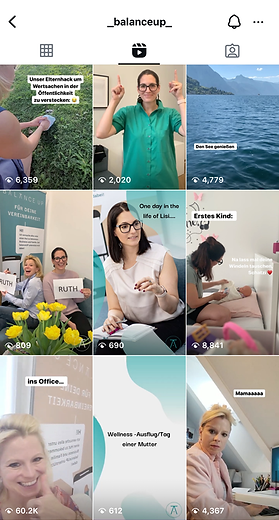
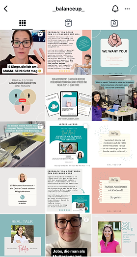
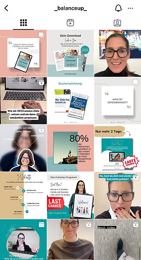
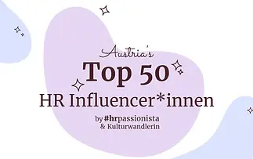
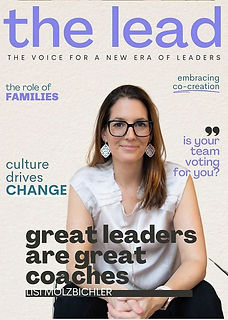

Personal Branding, Social Media
Management, Event promotion, and
Community Building
Industry: platform - mental health - coaching
BalanceUP is a client-centered platform revolutionizing how individuals and businesses approach the balance between work and family life. Led by Lisi Molzbichler, a Coach and advocate for work-life integration.
BalanceUP offers resources like e-learning courses, coaching, and a thriving community to support personal and professional growth. The #BalanceUPSummit (online and offline) is an annual event focused on empowering work-life balance with fresh ideas and valuable connections.




Lisi was in the Top 50
HR Influencer in Austria

balanceUP Summit 2023
1. builed Lisi's Molzbichlers personal brand
2. created and curated content for social media channels with the founders
3. Grew and engaged the social media community
4. promoted the balanceUP Summit 2022 and 2023
BalanceUP Summit 2022:
50+ inspiring speakers
600+ participants
60+ guests at the exclusive in-person evening event